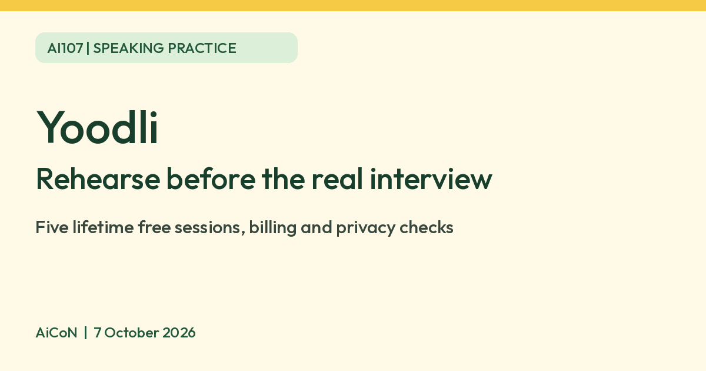

Yoodli: rehearse an interview, with clear limits
Yoodli provides AI roleplays and speaking practice for interviews, presentations and conversations. Its individual free tier is small: five lifetime practice sessions, not a fresh allowance every month. Practise with made-up details rather than confidential material.

What Yoodli does
Yoodli describes an AI communication coach and roleplay platform. Its individual plans cover interview preparation, public speaking and communication coaching. Official help counts speeches, interviews and roleplays as practice sessions, while the FAQ mentions filler-word counting and transcripts.
The useful idea is rehearsal: say an answer aloud, review feedback and try a more focused version. An AI response is not an employer's assessment, a guarantee of hiring success or a replacement for human coaching. We did not run a practice session or evaluate the quality of its feedback.
The free allowance is five sessions for the lifetime of the account
| Starter / free | Five lifetime practice sessions. Official subscription help says each speech, interview or roleplay over 30 seconds counts. |
|---|---|
| Counting rule | Pricing also counts practice over 30 seconds, including AI roleplays, pitch practice and feedback on uploaded recordings. Do not assume uploads are outside the allowance. |
| Pro | Up to ten roleplays per week; published annual-billing equivalent is US$8 per month. That is US$96 over twelve months before any applicable tax, not an US$8 month-to-month offer. |
| Advanced | Unlimited roleplays; published annual-billing equivalent is US$20 per month, or US$240 over twelve months before tax. It also excludes roleplay data from AI training by default. |
| India price | No tax-inclusive INR checkout total or local-payment availability was verified. The USD figures describe the published plan, not a final India bill. |
| Age | The website's terms require users to be 18 or older. |
| Cancellation | Cancellation stops auto-renewal and keeps access to the end of the paid period. Terms allow refunds where required by law; do not assume cancelling triggers a refund. |
Use a limited allowance thoughtfully
- Start at the official Yoodli website and choose individual practice rather than a team sales enquiry.
- Review the current Starter allowance and privacy terms before creating an account or recording.
- Choose one rehearsal goal, such as introducing yourself clearly or explaining a project in two minutes.
- Write a small list of points beforehand. Use invented company/client details and remove confidential facts.
- Select an available interview or speaking-practice option. Options can vary by plan; this guide does not claim a tested screen sequence.
- Speak naturally, then review feedback as a suggestion. Check the transcript and any counts against what you actually said.
- Pick one improvement, such as a clearer opening or fewer filler words, and practise that offline before using another session.
- If paying, review the annual total, tax, renewal and cancellation terms on the checkout screen before committing.
The workflow is an editorial example based on documented features. No account, rehearsal, upload or subscription was created for this guide.
Privacy matters more than the word “coach”
The pricing FAQ says session data on individual Starter and Pro plans may be used to improve the platform. Advanced, Team and Enterprise roleplay data is excluded from AI training by default. Do not call the free plan confidential or “not used for training”.
The terms also describe a broad licence for contributed material. Review the current terms before uploading any recording. Keep workplace secrets, private contact details and real customer stories out of practice prompts and audio.
If a recording includes another person, get permission to upload it and ensure you have the necessary rights. A practice tool's security claims do not create permission to share someone else's voice or internal information.
What feedback cannot establish
An AI coach can mishear you, misunderstand context or give unhelpful advice. Treat a score as practice feedback, not a measure of your worth or proof that an interview answer is factually correct. Human feedback is valuable for context, tone and audience expectations.
Language support, Malayalam feedback, regional accents, browser/device access from India and the quality of live feedback were not tested. No claim of universal language support or guaranteed confidence is made here.
Frequently asked questions
Are the five sessions monthly?
No. Official help says lifetime sessions.
Is Pro billed monthly at US$8?
The verified price is US$8 per month billed annually, a US$96 yearly equivalent before tax. Check any alternative billing option separately.
Does the free plan exclude my recordings from AI training?
The pricing page says Starter and Pro data may be used to improve the platform. The explicit default training exclusion applies to Advanced, Team and Enterprise.
Can Yoodli guarantee an interview result?
No guarantee is made here. It is practice, not a hiring decision.
Has AiCoN tested it?
No. This guide verifies public product information and limits, not performance.
Sources: Official homepage, Pricing and data-use FAQ, Subscription help, dated 27 August 2026, Product FAQ, Terms. Checked 7 October 2026.